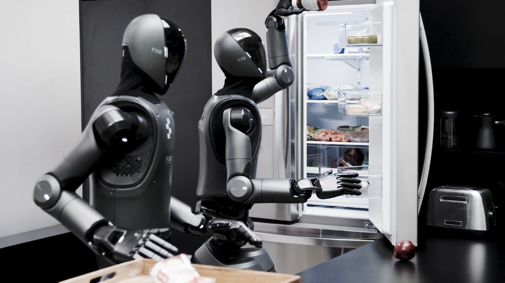

Figure AI · robot AI model
Helix
United States · 2025
Runs on Figure 03 by Figure AISource and note: Figure 03A figure.ai/news/helix-02 · Retrieved 13 October 2026
Sources retrieved: 13 October 2026 (A, B, C, D, E, F)
- Model type
- Vision-language-action (VLA)Source and note: Model typeB figure.ai/news/helix · Retrieved 13 October 2026Note. Developer wording: “Helix: A Vision-Language-Action Model for Generalist Humanoid Control”.
- What it controls
- Arms and hands Whole body Walking Helix 02 / Helix 2.5Varies by versionSource and note: What it controlsA figure.ai/news/helix-02 · Retrieved 13 October 2026Note. Helix 20 February 2025: “S1 outputs full upper body humanoid control at 200hz, including desired wrist poses, finger flexion and abduction control, and torso and head orientation targets” (upper body only; torso and head targets have no value of their own in the closed list). Helix 02 27 January 2026: “Complete joint-level control of the entire robot - legs, torso, head, arms, wrists, and individual fingers.”. Project Go-Big (18 September 2025, version not named): “A single Helix neural network now outputs both manipulation and navigation”. Helix 2.5 17 September 2026: “Zero-shot whole-body autonomy across 30 real homes”, “spanning locomotion, rigid and deformable manipulation, bimanual coordination, and active perception”.
- Inputs
- Camera Language Robot state Touch Helix 02Varies by versionSource and note: InputsA figure.ai/news/helix-02 · Retrieved 13 October 2026Note. Helix 20 February 2025: “monocular robot images and robot state information” plus “natural language commands specifying desired behaviors”. Helix 02 27 January 2026: “Head cameras, palm cameras, fingertip tactile sensors, and full-body proprioception.”; language through System 2, which “reasons slowly about goals: interpreting scenes, understanding language, and sequencing behaviors”. Helix 2.5 17 September 2026: not stated.
- Base model
- Helix 2.5None (trained from scratch) Varies by versionSource and note: Base modelE figure.ai/news/helix-2-5-zero-shot-30-home-generalization · Retrieved 13 October 2026Note. Helix 2.5 17 September 2026: “Helix 2.5 was itself pretrained from random initialization entirely on Index, unlike Helix 02, which started from a pretrained vision-language model.” Helix 20 February 2025: “S2 is built on a 7B-parameter open-source, open-weight VLM pretrained on internet-scale data” (model not named). Helix 02 27 January 2026: a pretrained vision-language model (not named).
- Licence document
- ProprietarySource and note: Licence documentD figure.ai/news/introducing-figure-03 · Retrieved 13 October 2026Note. Figure's word: “Figure's proprietary vision-language-action AI”.

Specifications
10/14 specifications disclosed 4 not stated
1 field hidden 3 not-stated fields with a note stay ·
How to read the figuresShow guideClose
Not statedThe developer publishes nothing on itNoThe developer says it does notVersionsDiffers between versions
Select a source marker for source details and notes.
Release1/1 disclosed
Input and output4/4 disclosed
Versions
- Helix 02
- Camera Language Robot state Touch
- Helix
- Camera Language Robot state
Versions
- Helix 02
- Arms and hands Whole body Walking
- Helix 2.5
- Arms and hands Whole body Walking
- Helix
- Arms and hands
Versions
- Helix
- 35 DoF
Size and speed1/2 disclosed
Versions
- Helix 02
- 1,000 Hz
- Helix
- 200 Hz
Where it runs and what it is built on2/2 disclosed
Versions
- Helix 02
- pretrained VLM (not named)
- Helix 2.5
- none (trained from scratch on Index)
- Helix
- open-weight 7B VLM (not named)
Openness1/3 disclosed
The developer’s own claims1/2 disclosed
Versions
- Helix 2.5
- needs retraining
- Helix
- without examples
Versions
- Helix 20 February 2025
- Helix 02 27 January 2026
- Helix 2.5 17 September 2026
The developer has released this model in several versions. Each figure applies to the version its source names.
Notes
Figure describes Helix as a generalist humanoid Vision-Language-Action model that learns and improves over time as it acquires new skills.
Helix 02 (27 January 2026) adds System 0, a whole-body controller that executes at 1 kHz below System 1 and System 2.
Helix 2.5 (17 September 2026) was pretrained from random initialization on Index, Figure's dataset of human behaviour, not from a vision-language model.
Sources
One line per source, not per figure: a source has one retrieval date.
- Afigure.ai/news/helix-02Retrieved 13 October 2026
- Bfigure.ai/news/helixMain source. Retrieved 13 October 2026
- Cfigure.ai/helixRetrieved 13 October 2026
- Dfigure.ai/news/introducing-figure-03Retrieved 13 October 2026
- Efigure.ai/news/helix-2-5-zero-shot-30-home-generalizationRetrieved 13 October 2026
- Ffigure.ai/news/helix-logisticsRetrieved 13 October 2026